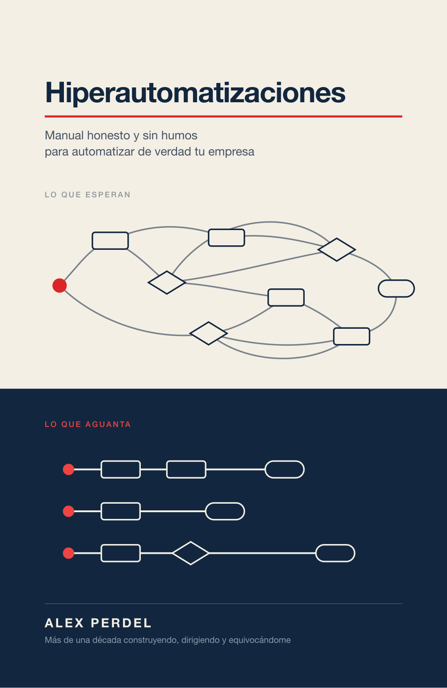

Pensar antes de construir
Cómo se piensa una automatización antes de escribir código —o antes de encargárselo a alguien—. Lo que hay que haber hecho a mano antes de automatizarlo.
Manual honesto y sin humos para automatizar de verdad tu empresa.
La mayoría de las automatizaciones no se caen por la tecnología.
Se caen antes: en la reunión donde todo el mundo sabía que aquello no iba a salir y nadie dijo nada. En el proceso que se automatizó sin que nadie lo hubiera hecho nunca a mano. En el «esto se hace en un rato».

Portada provisionalNo es un libro sobre herramientas. Es un libro sobre criterio.
Directivos, propietarios, consultores, responsables de innovación y todo el que se juega presupuestos y equipos en proyectos de IA, RPA y agentes.
Porque la herramienta es lo de menos si el criterio falla.
Cómo se piensa una automatización antes de escribir código —o antes de encargárselo a alguien—. Lo que hay que haber hecho a mano antes de automatizarlo.
Las señales que aparecen meses antes del entierro: el kickoff épico, el «casi listo» que dura ocho meses, la métrica que solo sirve para el comité.
Humanos, cuentas y sentido común en el proceso: dónde va un humano en el bucle, qué cuesta de verdad en tokens y cuándo cerrar en vez de mejorar.
Sale a principios de 2027.
Que no se te pase: te aviso el día que esté a la venta.
La Parte I se puede saltar quien ya la sepa. Las Partes II y IV son las que incomodan.
Parte I
El vocabulario mínimo. Sin esto, la conversación con tu equipo o tu proveedor es un malentendido caro.
Parte II
Por qué fracasan los proyectos. Una trampa por capítulo, con la escena real, el patrón nombrado y qué hacer el lunes por la mañana.
Parte III
Cómo se hace bien. Del POC al MVP, escalar sin espagueti, cuándo delegar en el modelo y cuánto cuesta de verdad.
Parte IV
Lo que un máster no te enseña: la parte política. Los cuatro capítulos llevan cicatriz propia obligatoria.
Además: un prólogo que empieza por lo que este libro no es · un epílogo sobre el paso del hacedor al líder · y cuatro apéndices — glosario ampliado, fichas de herramientas, recursos y fuentes.
Un correo. El día que salga. No hay newsletter detrás, ni secuencia de bienvenida, ni nada que no hayas pedido — y te puedes borrar de un clic.
Sin seguimiento comercial, sin cesión a terceros y sin correos semanales que nadie pidió.